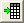

Minitool Clustermanipulation
Cluster-Gadget
Zusammenfassung
Origin unterstützt das Minitool Clustermanipulation, um einfache Statistiken für einen grafisch festgelegten Bereich (ROI) in einem Diagramm durchzuführen. Das Minitool kann auch verwendet werden, um Datenpunkte zu bearbeiten, zu löschen, zu maskieren oder zu kategorisieren. Die Statistikergebnisse werden dynamisch aktualisiert, wenn die grafische Datenauswahl (ROI) verschoben oder in ihrer Größe verändert wird.
Origin-Version mind. erforderlich: Origin 2016 SR0 (nur Pro)
Was Sie lernen werden
- Einfache Statistiken für eine grafische Datenauswahl (ROI) in einem Diagramm durchführen
- Datenpunkte in einem Diagramm bearbeiten, z.B. Punkte löschen oder maskieren, mit Hilfe von Menüoptionen oder Schaltflächen
- Statistiken für Punkte innerhalb und außerhalb der ROI anzeigen oder ausgeben
- Datenpunkte kategorisieren und Punkte mit kategorialen Daten farbig abbilden
Einfache Statistiken durchführen
- Öffnen Sie eine neue Arbeitsmappe und importieren Sie die Origin-Beispieldaten der Datei Categorical Data.dat, die sich im <Origin-Programmordner>\Samples\Graphing befindet.
Klicken Sie mit der rechten Maustaste auf Col(D) und wählen Sie Worksheet sortieren: Aufsteigend. Das Arbeitsblatt wird entsprechend der Kategorie Drug sortiert.
- Markieren Sie bei gedrückter Strg-Taste drei Teile der Spalte Col(B) getrennt voneinander.
- Wählen Sie Zeichnen: Einfache 2D: Punktdiagramm im Hauptmenü, um ein Diagramm zu erstellen. Das Diagramm mit den drei Zeichnungen zeigt den Abbau für jede Droge an.
- Klicken Sie mit der rechten Maustaste auf die Diagrammlegende und wählen Sie Einstellungen, um den Dialog Objekteigenschaften zu öffnen. Bearbeiten Sie dann die Legende wie unten zu sehen. Klicken Sie auf OK.
- Wählen Sie Minitools: Cluster im Origin-Menü, um den Dialog Cluster: addtool_cluster aufzurufen. Wählen Sie Kreis in der Auswahlliste Umriss auf der Registerkarte Grafische Datenauswahl.
- Klicken Sie auf OK. Ein gelber Kreis, die ROI, wird der Zeichnung hinzugefügt und der Dialog Minitool Cluster geöffnet.
- Verschieben Sie den gelben Kreis zu dem Bereich, für den Sie die Statistik ermitteln möchten. Die Ergebnisse werden auf der Registerkarte Innere Punkte des Dialogs angezeigt.
- Klicken Sie auf die Schaltfläche Statistikbericht ausgeben
 . Die Ergebnisse werden im Ergebnisfenster, Skriptfenster und in der Arbeitsmappe Cluster ausgegeben.
. Die Ergebnisse werden im Ergebnisfenster, Skriptfenster und in der Arbeitsmappe Cluster ausgegeben.
- Klicken Sie auf die Schaltfläche Zum Berichtsblatt gehen . Die Arbeitsmappe Cluster wird angezeigt.
 |
Wenn Sie Origin 2021b oder höher haben, haben Sie mehr Optionen für die Form der grafischen Datenauswahl (ROI-Feld). Setzen Sie im Dialog addtool_cluster die Form auf Beliebige Form. Wenn Sie auf OK klicken, wird ein kleiner Dialog ROI erstellen geöffnet, in dem Sie auf eine Formschaltfläche klicken -- ohne den Dialog ROI erstellen zu schließen -- und eine Form in Ihrem Diagramm aufziehen können. Behalten Sie diesen Dialog geöffnet, bis Sie das gewünschte ROI-Feld erhalten, und klicken Sie dann auf Fertig. Das Minitool Clustermanipulation wird geöffnet.
Beachten Sie auch, dass die Symbolleiste des Minitools Clustermanipulation jetzt Schaltflächen hat, um das ROI zu modifizieren und ein Neues ROI hinzuzufügen (zum Hinzufügen von mehreren ROIs zum Diagramm).
|
Datenpunkte aus einem Cluster ausschließen
In diesem Abschnitt zeigen wir Ihnen, wie Sie ein bestimmtes Datendiagramm aus dem Cluster ausschließen. Basierend auf dem obenstehenden Beispiel, führen wir eine einfache Statistik für Recovery of Drug A und Recovery of Drug B durch und schließen dabei Recovery of Placebo aus.
- Klicken Sie auf das Menü Daten im Dialog Minitool Cluster und deaktivieren Sie Plot(1) und Plot(2). Die erste und zweite Reihe im unteren Bedienfeld werden grau und können nicht mehr mit den Schaltflächen des Dialogs bearbeitet werden.
- Klicken Sie auf die Schaltfläche Datenpunkte maskieren
 . Die Datenpunkte für Recovery of Placebo werden in der grafischen Datenauswahl maskiert, und die Farbe wird rot. Gleichzeitig verwandeln sich die Statistikergebnisse für Recovery of Placebo in fehlende Werte.
. Die Datenpunkte für Recovery of Placebo werden in der grafischen Datenauswahl maskiert, und die Farbe wird rot. Gleichzeitig verwandeln sich die Statistikergebnisse für Recovery of Placebo in fehlende Werte.
- Klicken Sie auf die Schaltfläche Statistikbericht ausgeben . Die Ergebnisse werden im Ergebnisfenster, Skriptfenster und in der Arbeitsmappe Cluster ausgegeben.
Statistikergebnisse für Punkte außerhalb der grafischen Datenauswahl (ROI) ermitteln
- Klicken Sie auf Einstellungen: Einstellungen im Dialogmenü Minitool Cluster, um der Dialog Clustermanipulation Einstellungen aufzurufen.
- Wechseln Sie zur Registerkarte Berechnung. Aktivieren Sie das Kontrollkästchen Äußere Punkte berechnen.
- Klicken Sie auf die Schaltfläche OK. Die Statistikergebnisse für Punkte außerhalb der grafischen Datenauswahl werden auf der Registerkarte Äußere Punkte gezeigt.
- Klicken Sie auf die Schaltfläche Statistikbericht ausgeben . Die Ergebnisse für innere und äußere Punkte werden im Ergebnisfenster, Skriptfenster und in der Arbeitsmappe ausgegeben.
Datenpunkte in verschiedenen Bereichen einfärben
Sie können Datenpunkte im Diagramm direkt kategorisieren und die kategoriale Gruppenspalte im Quellarbeitsblatt ausgeben. Weiterhin können die Symbole auf die kategoriale Gruppenspalte abgebildet werden.
Erstellen Sie eine neue Arbeitsmappe und importieren Sie die Beispieldaten <Origin Program Folder>\Samples\Graphing\Categorical Data.dat neu. Markieren Sie Spalte B und erstellen Sie ein Punktdiagramm.

Datenpunkte werden in 4 Gruppen geclustert. Wir verwenden die Funktion Kategorien erstellen des Minitools Cluster, um eine kategoriale Spalte gemäß der Clustergruppen zu erstellen und die Symbolfarbe auf diese Spalte abzubilden.
- Wählen Sie Minitool: Clustermanipulation, um den Dialog Cluster: addtool_cluster aufzurufen. Wählen Sie Kreis in der Auswahlliste Umriss auf der Registerkarte Grafische Datenauswahl.
Klicken Sie auf OK, um einen gelben Kreis für die grafische Datenauswahl (ROI) zu der Zeichnung hinzuzufügen und den Dialog des Minitools Cluster aufzurufen.
- Verschieben das ROI-Feld und passen Sie seine Größe an, so dass nur der erste Datenpunktcluster unten links erfasst wird.

Klicken Sie auf die Schaltfläche Kategorien erstellen  im Dialog Minitool Cluster, um den Dialog Kategorialen Wert erstellen zu öffnen. Geben Sie Gruppe für Kategoriengruppenname und 1 für Kategorie ein. Aktivieren Sie das Kontrollkästchen Farbdaten nach Kategorie.
im Dialog Minitool Cluster, um den Dialog Kategorialen Wert erstellen zu öffnen. Geben Sie Gruppe für Kategoriengruppenname und 1 für Kategorie ein. Aktivieren Sie das Kontrollkästchen Farbdaten nach Kategorie.
Klicken Sie auf OK. Eine neue kategoriale Spalte mit dem Namen "Gruppe" wird zu dem Quelldatenblatt hinzugefügt, und Datenpunkte innerhalb des ROI-Felds werden mit "1" in dieser Spalte (Gruppe) gekennzeichnet. Punktdiagramme verwenden diese kategoriale Spalte auch als Farbindex.
- Wiederholen Sie Schritt 2 für die restlichen 3 Cluster und kennzeichnen Sie sie nacheinander mit 2, 3, 4.
Das Quellarbeitsblatt sollte folgendermaßen aussehen:
Schließen Sie das Minitool Clustermanipulation.
- Das folgende Diagramm wird angezeigt:
- Löschen Sie die ursprüngliche Legende. Wählen Sie Grafik: Legende: Kategoriale Werte..., um den Dialog legendcat aufzurufen. Deaktivieren Sie das Kontrollkästchen Alle Kategorien zeigen. Klicken Sie auf OK. Das Punktdiagramm mit neuer Legende sollte in etwa folgendermaßen aussehen.